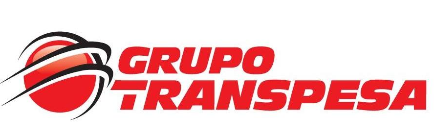
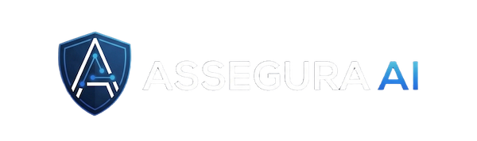
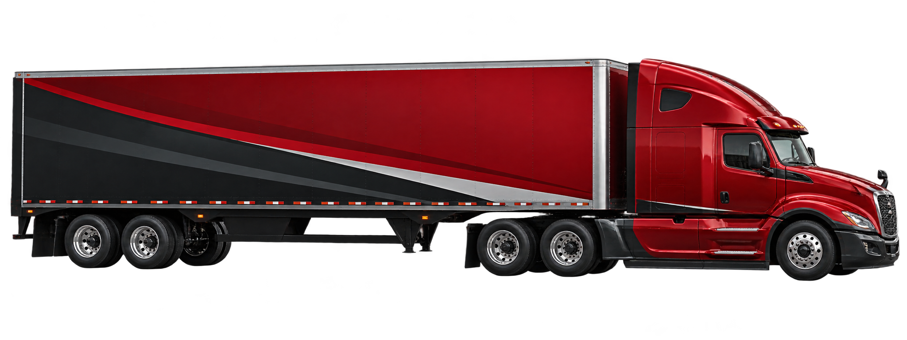

×
AATMF v1.0
Diagnóstico Empresarial de Transformación
Conectar procesos, tecnología y datos para decidir mejor y anticiparse.

Punto de partida
TRANSPESA ya cuenta con capacidades relevantes
El siguiente desafío consiste en determinar dónde conectar mejor procesos, tecnología y datos para generar mayor valor.
Lo que escuchamos
La conversación inicial reveló señales en distintas partes del negocio
Operación 01
Tiempos de viaje, disponibilidad y rotación de unidades
Activos 02
Mantenimiento, tractores, semirremolques y neumáticos
Personas 03
Conductores, descanso, comportamiento y seguridad
Datos 04
GPS, telemetría, reportes e información distribuida
Gestión 05
Excel, correo, WhatsApp y preparación manual de información
Finanzas 06
Orden de compra, facturación, cobranza y capital de trabajo
El diagnóstico determinará cuáles señales representan oportunidades de mayor impacto.
Por qué diagnosticar primero
Dos hipótesis surgidas de la conversación
¿Qué valor adicional podría generarse si estos datos se analizaran de manera integrada?
Posibles variables de evaluación: disponibilidad, eficiencia, seguridad, alertas y anticipación.
¿Existen oportunidades para reducir tiempos, intervención manual y capital de trabajo?
El análisis comprobará tiempos, responsables, transferencias y fuentes de evidencia.
Lo que proponemos
Diagnóstico Empresarial de Transformación
ASSEGURA AI Transformation Maturity Framework evalúa cómo se relacionan las capacidades que permiten transformar el negocio.
El resultado mostrará la situación actual, las brechas y las iniciativas que conviene priorizar.
Cómo llegamos a las conclusiones
La evidencia conduce cada decisión
Evidencia
Entrevistas, documentos, indicadores, reportes y muestras operacionales forman la base del análisis.
Base verificable del diagnóstico
¿Qué información existe, quién la genera y qué decisión permite sustentar?
Selecciona cada etapa. La lectura avanza desde la evidencia hasta una decisión de prioridad trazable.
Qué analizaremos
Una lectura transversal de TRANSPESA
Dirección / Gerencia
Revisaremos cómo se definen prioridades, cómo se patrocinan los cambios y qué información utiliza la gerencia para decidir.
Selecciona una unidad. El inicio del diagnóstico confirmará el alcance final según la estructura real de TRANSPESA.
Qué necesitamos de TRANSPESA
Participación enfocada, evidencia representativa y validación
Personas clave
Entrevistas de 45–75 minutos con responsables que conocen la operación, las decisiones y las excepciones del proceso.
El diagnóstico no requiere intervenir la operación ni acceder indiscriminadamente a información sensible.
Qué recibirá TRANSPESA
Una base ejecutiva para decidir qué transformar primero
AATMI
Índice ejecutivo que sintetiza la madurez de transformación y permite comparar dimensiones bajo una misma escala.
De oportunidades a decisiones
Executive Transformation Blueprint
días
Quick wins y fundamentos
Estabilizar datos críticos, resolver fricciones evidentes y preparar las dependencias que habilitan los siguientes horizontes.
Selecciona un horizonte. El camión muestra el avance y el contenido explica qué se construye en cada etapa.
Visión ilustrativa · su pertinencia deberá validarse
TRANSPESA Intelligence Layer
INTELLIGENCE
LAYER
El diagnóstico determinará qué componentes tienen sentido para TRANSPESA, en qué orden y con qué nivel de inversión. Esta visión no representa un resultado del diagnóstico.
Alcance del diagnóstico
3–4 semanas para convertir evidencia en una ruta priorizada
Descubrimiento
Entrevistas, evidencia inicial, sistemas relevantes y confirmación del alcance.
Propuesta comercial
Diagnóstico Empresarial de Transformación
Valor del servicio
Inversión introductoria
La inversión cubre el diagnóstico completo
Incluye análisis, validación y una ruta ejecutiva para decidir las siguientes inversiones.
Implementación de iniciativas, desarrollo de software, hardware, integraciones o licencias de terceros.
La pregunta central
¿Dónde puede TRANSPESA generar mayor valor conectando lo que ya tiene?
La evidencia conectará estas capacidades con decisiones, anticipación y transformación.
Deja de reaccionar. Empieza a anticiparte.